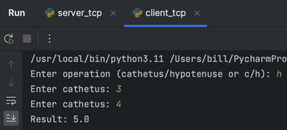
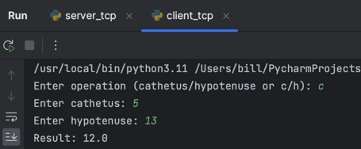
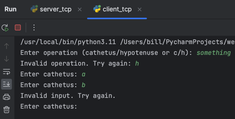
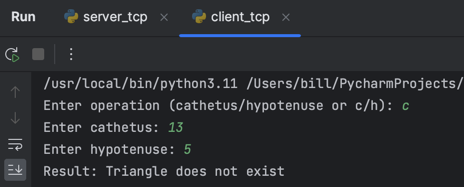

Задание 2
Реализовать клиентскую и серверную часть приложения. Клиент запрашивает у сервера выполнение математической операции, параметры, которые вводятся с клавиатуры. Сервер обрабатывает полученные данные и возвращает результат клиенту.
Вариант: теорема Пифагора.
Использовать библиотеку socket.
Реализовать с помощью протокола TCP.
Выполнение
Cерверная часть
import socket
def calculate(cathetus_1, cathetus_2=None, hypotenuse=None):
if cathetus_2 is None and hypotenuse is None:
return "Invalid input"
if hypotenuse and cathetus_1 >= hypotenuse:
return "Triangle does not exist"
if cathetus_2 is None:
return (hypotenuse**2 - cathetus_1**2) ** 0.5
if hypotenuse is None:
return (cathetus_1**2 + cathetus_2**2) ** 0.5
return "Something went wrong"
conn = socket.socket(socket.AF_INET, socket.SOCK_STREAM)
conn.bind(("127.0.0.1", 5000))
conn.listen()
conn, addr = conn.accept()
while True:
data = conn.recv(1024).decode("utf-8")
if not data:
break
operation, a, b = data.split()
a, b = float(a), float(b)
if operation == "hypotenuse":
result = calculate(cathetus_1=a, cathetus_2=b)
elif operation == "cathetus":
result = calculate(cathetus_1=a, hypotenuse=b)
else:
result = "Invalid operation"
conn.send(bytes(str(result), encoding="utf-8"))
Программа состоит из двух частей:
- функция
calculate(), которая выполняет математическую операцию: по заданным параметрам вычисляет третий (недостающий катет или гипотенузу). На стороне сервера производится проверка, все ли параметры были переданы, а также существует ли такой треугольник; - основная часть программы, которая принимает запросы от клиента, обрабатывает их и отправляет ответ. Формат запроса:
<операция> <первый параметр> <второй параметр>. Возможные операции:hypotenuse(вычисление гипотенузы) иcathetus(вычисление катета). При некорректном запросе сервер отправляет сообщение об ошибке. Корректность ввода проверяется на стороне клиента.
Клиентская часть
import socket
conn = socket.socket(socket.AF_INET, socket.SOCK_STREAM)
conn.connect(("127.0.0.1", 5000))
operation = input("Enter operation (cathetus/hypotenuse or c/h): ")
while operation not in ("cathetus", "c", "hypotenuse", "h"):
operation = input("Invalid operation. Try again: ")
if operation in ("c", "h"):
operation = "cathetus" if operation == "c" else "hypotenuse"
while True:
if operation == "cathetus":
a = input("Enter cathetus: ")
b = input("Enter hypotenuse: ")
else:
a = input("Enter cathetus: ")
b = input("Enter cathetus: ")
try:
a = float(a)
b = float(b)
break
except ValueError:
print("Invalid input. Try again.")
conn.send(bytes(f"{operation} {a} {b}", encoding="utf-8"))
result = conn.recv(1024).decode("utf-8")
print(f"Result: {result}")
Программа просит ввести операцию, которую необходимо выполнить (cathetus, hypotenuse или их сокращённые
варианты). При некорректном вводе программа просит повторить ввод. Далее в зависимости от выбранной операции
программа просит ввести параметры. При некорректном вводе (если были введены не числа) программа просит повторить ввод.
После ввода параметров программа отправляет запрос серверу, получает ответ и выводит его.
Пример работы программы
Тест 1. Вычисление гипотенузы.

Тест 2. Вычисление катета.

Тест 3. Некорректный ввод.

Тест 4. Несуществующий треугольник.
